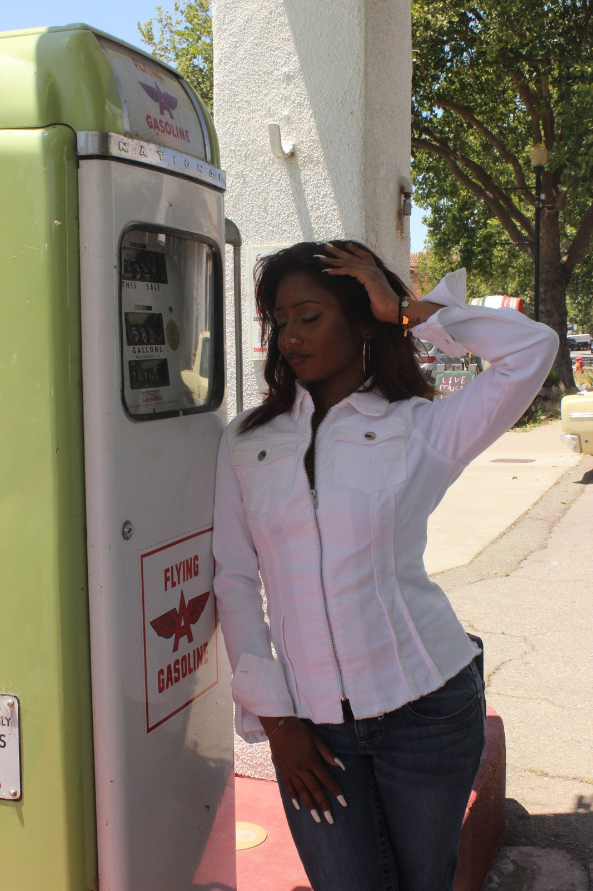

I’m a marketing student at Rutgers Business School, planning a second major in supply chain management. I’m drawn to the point where a good idea becomes something people can actually use: a clearer app, an invitation that catches your eye, or a story that makes you stop scrolling.
Away from the screen, I practice Chicana lettering and calligraphy. I love the rhythm of the letters, the dramatic flourishes, and how much personality a name can hold. That same attention to shape and feeling finds its way into my design work. Hiking gives me room to step back and come home with fresh ideas.
From sunny California, now at Rutgers. I grew up in Fremont and bring that West Coast curiosity to my work in New Jersey.

current responsibilities
Where strategy, education, and community meet.
From creative direction to community building, here’s what I’m working on right now.
Swipe through the lineup →
Rutgers Association of Marketing Strategy
Strategic Partnerships Director
Developing partnership opportunities that connect student marketers with brands, organizations, and practical strategy experience.
Creative X
Outreach Director
Helping grow Rutgers' UI/UX community through outreach, member engagement, and stronger pathways for students exploring design.
Rutgers Blueprint
Education Director
Teaching and supporting students through the fellowship experience after completing the program as a designer.
Rutgers School of Public Health
MarCom Student Assistant
Creating reels, social content, and press-release drafts for Rutgers School of Public Health. Explore my MarCom work ↗
Latino Action Network x CLAC
Head of Marketing · CLAC × LAN Summit
Leading marketing and promotional strategy for From Tomorrow to Today, the CLAC × Latino Action Network youth summit. See the summit ↗
Memory Mission
Head of Marketing
Leading marketing support for a nonprofit focused on memory education, bringing content strategy and a younger audience perspective to the team.
Rutgers AV Tech
AV Technology Assistant
Supporting live event technology, room setup, and campus production environments through a hands-on Rutgers AV role.
contact
READY WHEN YOU ARE.
Ready to make history?
Send a note, start a project, ask about a case study, or just say hi.